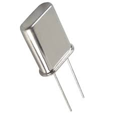

In Tuned collector oscillator, Hartley oscillator and Colpitts oscillator we have seen that tank circuit parameters determine the frequency of LC oscillators. Such parameter values can change with timer, climate and temperature fluctuations. Therefore, the frequency of oscillation does not remain constant. For a high frequency stability, LC oscillators are unsuitable. The resonant frequencies of some naturally available crystals like quartz, are relatively constant. So for a high frequency stability a crystal is employed as the frequency determining element in an oscillator. Such oscillator are referred to as crystal oscillator.
Crystal oscillators conveniently cut quartz crystals. When complete, the cross section of such a crystal is hexagonal. The axes normal to the crystal faces are known as the mechanical or Y-axes.

The resonant frequencies of a crystal vary inversely as the thickness of the cut. Crystal oscillators are generally used in the frequency range from about 15 kHz TO 10 MHz. For lower frequencies, the size of the quartz crystal is inconveniently large. At higher frequencies, the thickness of the crystal is so small that it becomes fragile. Comparing the circuit of a crystal oscillator with Colpitts oscillator we see that the two circuits are identical except that the inductor of the Colpitts oscillator is replaced by the crystal. The frequency of oscillations of the crystal oscillator is the parallel resonant frequency fp which is determined by circuit parameters.
Q is very high due to small value of R. This type of oscillator are used in the range of a few kHz to several MHz. Hence crystal oscillator are used as standard or master oscillations and to generate clock signals in VLSI circuits. Disadvantages of this type of oscillator are fixed nature of the frequency, and non availability of low - frequency crystal oscillator.
 by
by